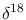
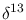
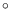
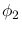
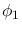
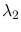
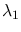
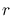
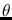
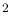

Sean Ulm, Damien O'Grady (CABAH, JCU Cairns)
182 Records of R measurements containing O and C values and Lat-Long coordinates were processed. The distribution of sites is shown in Fig. 1.
|
|
The intention was to model the R values on location and other parameters. Given that site locations form a near continuous loop around the coast, for the purposes of the model, the latitude and longitude were converted to polar coordinates about the centre of the continent, so that the bearing formed a continuous loop with a period of 360.
Bearing and distance were calculated for each data point from the central point with coordinates 134 East, 24 South. Great Circle distance was calculated using the Haversine Formula, where
 and  are the destination and starting point latitudes, and  and  the corresponding longitudes. The radius  of the spherical geoid model was taken to be 6,371 km. The angle  used was the starting bearing from central point to traverse the distance path, calculated as
Simple linear models with some interactions between the variables were used. The following four tables show the model formulae and results summaries.
An R value of 0.69 for the full model was considered reasonable. Although it can be argued that a model using location as a predictor can always be manipulated to compliance, given sufficient complexity and a measure of over-fitting, the fact that varied data existed in the same locations that were distinguished by their O and C values alone, lends some weight to the observed R value. What should also be considered is the fact that the purpose of the exercise was to produce a tool to predict R values within the domain of observed R values. Fig. 2 shows predicted R against measured R for all sites using the full model.
|
|
Predicted R values for both the full model and the location-only model are shown in Fig. 3, in the context of location.
|
|
Model coefficients and variance-covariance matrices corresponding to each of the models were formed into javascript multi-dimensional arrays, which were configured to calculate a R prediction with and without either of the O and C values, using the resultant models.
|
|
This document was generated using the LaTeX2HTML translator Version 2018 (Released Feb 1, 2018)
Copyright © 1993, 1994, 1995, 1996,
Nikos Drakos,
Computer Based Learning Unit, University of Leeds.
Copyright © 1997, 1998, 1999,
Ross Moore,
Mathematics Department, Macquarie University, Sydney.
The command line arguments were:
latex2html -split 0 -nonavigation deltaRmethod
The translation was initiated on 2020-05-05